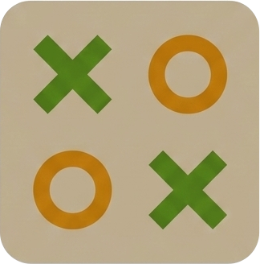

ChangelogStats tracking
Your results now stick around. Wins, losses, draws, and win percentage are saved on the watch, split separately for single player and multiplayer. You can check your record anytime from the main menu.
Multiplayer between two watches
You can now challenge a friend on another Garmin watch directly. Share a pairing code, connect, and play in real time. No phone, no internet required. A colored ring shows whose turn it is so there is never any confusion.
Smarter single player
The solo opponent got a significant upgrade. It now blocks your winning moves, sets up its own threats, and plays a proper game rather than just filling random squares. A much more satisfying opponent when you are playing on your own.
Initial release
TicTacToe is live on Garmin Connect IQ. Play the classic 3x3 game directly on your watch. Single player and local pass-and-play available from day one. Works on 70+ Garmin models.